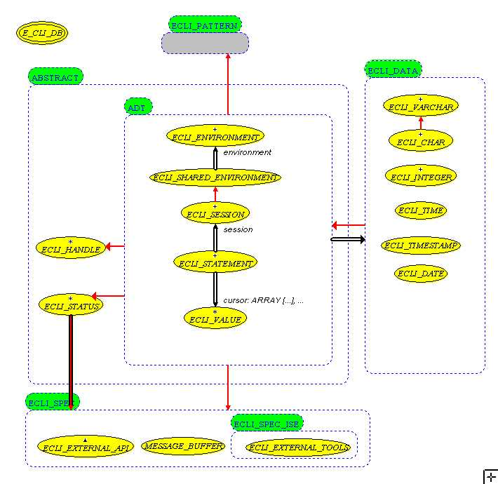

Eiffel RDBMS interface Library
compatible to ISO/CLI (Call Level Interface) API
Author : Paul G. Crismer <pgcrism@users.sourceforge.net>
License: Released under the Eiffel Forum License
Copyright: 2000-2002 - Paul G. Crismer
You'll find in another document a Tutorial and a comparison to related work.
ECLI is an Eiffel
wrapper around the X/Open ISO/CLI (Call Level Interface).
This interfaces defines an API to RDBMS drivers, and uses SQL92.
ISO/CLI is also known as ODBC under MS-Windows. This
interface has implementations on other platforms.
ODBC/CLI libraries and drivers are available either as Open Source or as commercial products and are available for Windows, Mac, Unix, Linux. Database drivers are available for various databases or file formats : Text, Excel, DBase, Sybase, SQL-Server, Oracle, PostgreSQL, MySQL, AS/400, DB/2, to name only a few of them.
ECLI wants to be portable across (1) Platforms, (2) Eiffel Compilers.
Class ECLI_CURSOR provides basic cursor mechanisms. The "Query Assistant" tool generate cursor classes that
"Query Assistant" also checks that the query is
executable on your datasource before generating any encapsulating
class. Result and parameters names are "inferred" by
asking meta-data about the executed query. The generated class is
thus fully "static", i.e. correct types are used and no
meta-data are asked to the datasource, for the best possible
performance.
The drawback is that, when the database schema changes, cursor
classes may need to be re-generated.
For the moment CHAR, VARCHAR, INTEGER, FLOAT, DOUBLE, DATE and TIMESTAMP data are supported.
If other datatypes are needed, they can easily be supported. For the moment, CHAR data can be used to map to other types, since databases can convert automatically CHAR values to other SQL data types. ECLI can be used for common RDBMS access in the current state of development.
The X/Open Call Level Interface is a standard API for database access.
It is available on various platforms, i.e. Unix, Linux, Win32. This is one of the only standards that all vendors, including M$, fully support without "modifying" it.
This Eiffel interface is close to CLI, and hides some implementation details as well. This is a very simple wrapper.
The main goal is to give a clear and simple database access for common applications. Since it is a thin wrapper, performance should be as good as possible.
It is not an OO-to-Relational wrapper framework. This interface can be a component of such a framework
CLI allows only one transaction per connection/session. There is no subtransaction mechanism.
Class ECLI_STATUS implements the necessary mechanisms.
Modules that
transfer data between database and program space should know the
database data type and the program data type. That is why
data-transfer-values are encapsulated
in the class ECLI_VALUE and its descendants.
Descendant classes map CLI specific database values : CHAR,
VARCHAR, INTEGER, ...
NOT Supported:

+- doc -- documentation +- examples -- examples | +- test1 -- table creation, insertions, selection, drop | +- isql -- interactive SQL | +- qa_example -- sample application for cursor generator | +- test_Xaction -- transaction test program | +- src | +- abstract -- abstract ECLI data types | +- data -- data transfer classes | +- pattern -- used pattern classes | +- spec -- special classes | +- C -- C wrappers | +- Ise -- Ise specific | | +- Windows Platform specific | | +- linux | +- se -- SmallEiffel specific | +- Windows ... | +- linux +- tools +- query_assistant -- cursor classes generator
NOTE for Linux/Unix (*n*x) users : This package uses unixodbc,
avalaible at http://www.unixodbc.org.
It has been tested with PostgreSQL 7.0.2.
Define the ECLI variable as the ECLI directory
A) go to the spec - compiler - platform directory of your choice
B) make the ecli_c.lib (WIN32) or libecli_c.a (*n*x) library
A) SmallEiffel - run the sebuild.bat (WIN32) or sebuild.sh (*n*x) command file
B) ISE - use the Ace.ace file or linux.Ace file
C) VE - use the specific project definitions
Memory management problems (segmentation violation) have been fixed, to our best knowledge.